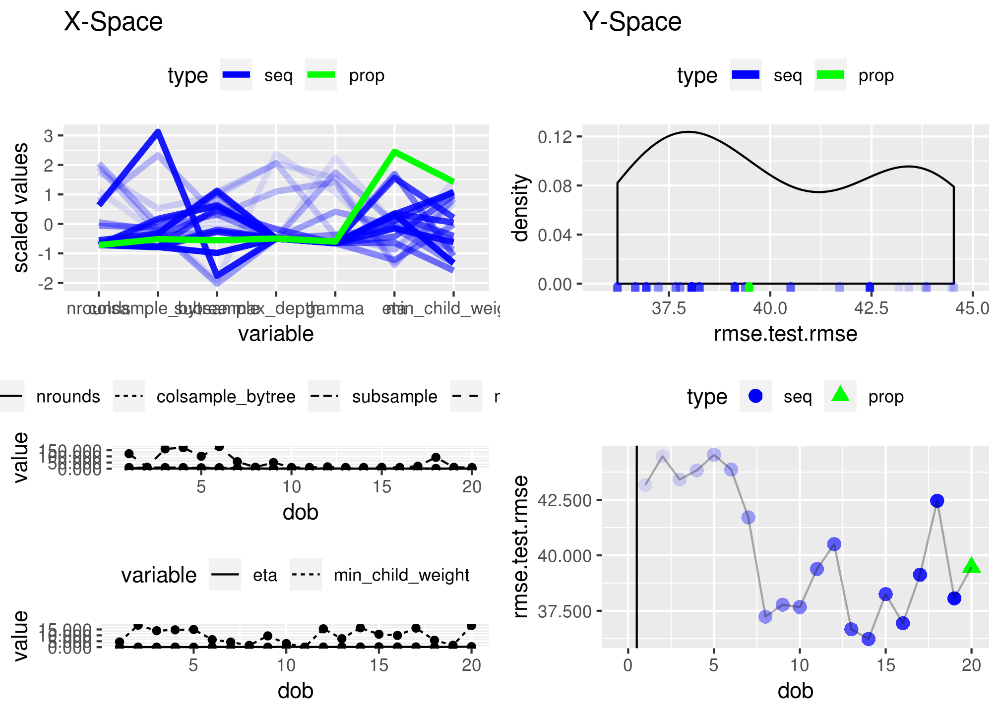
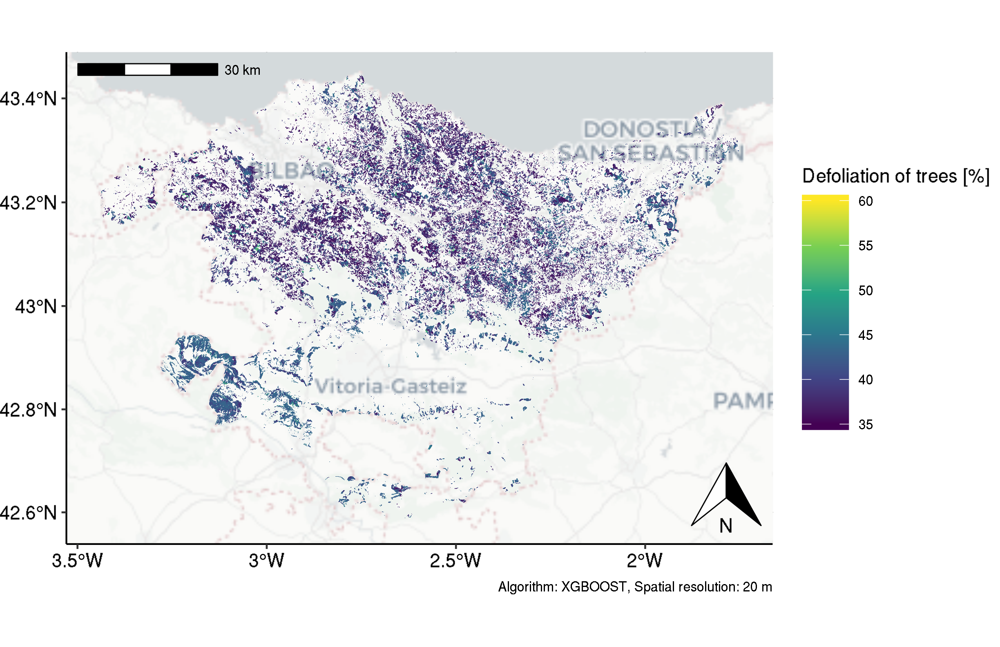
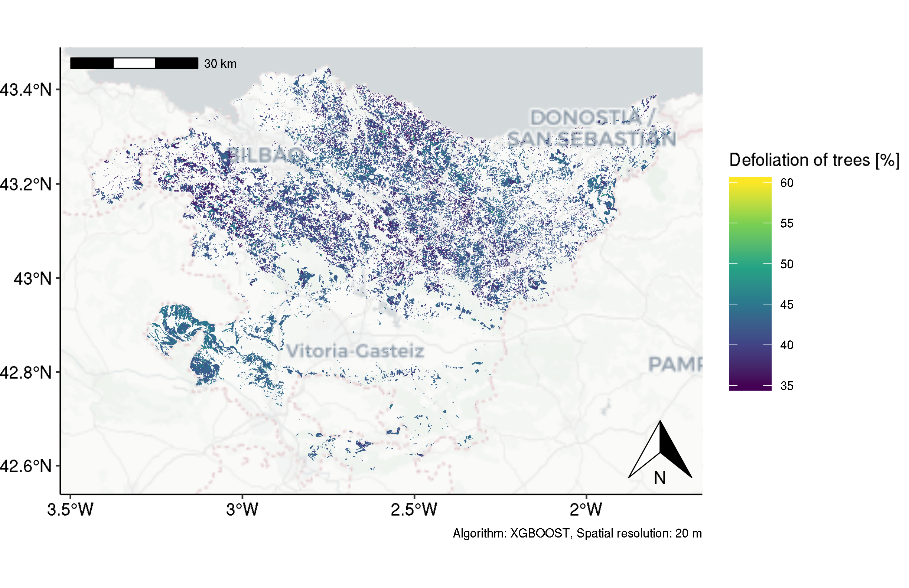
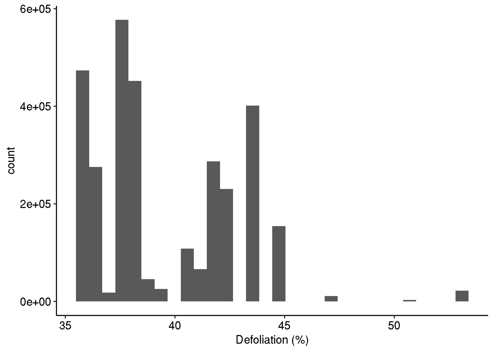
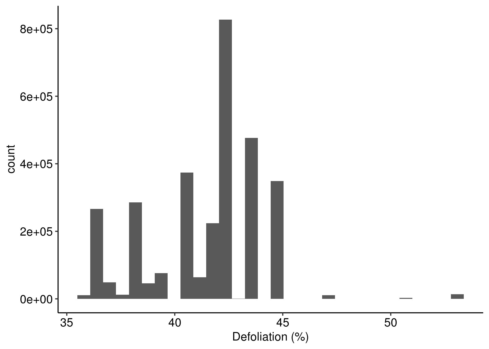
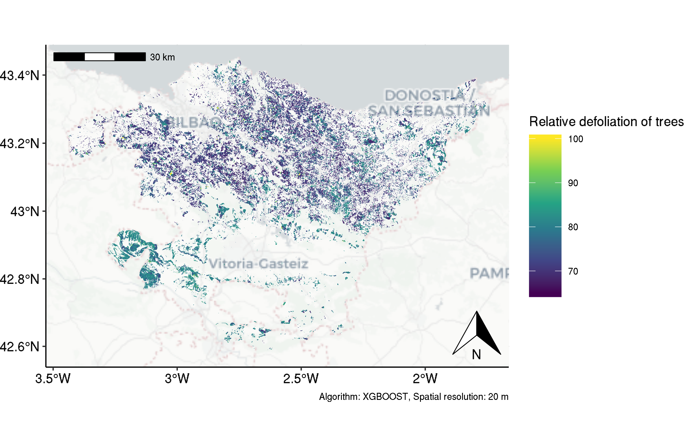
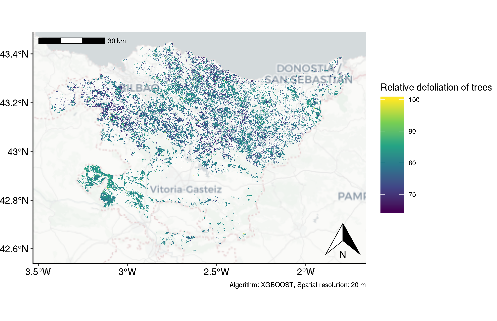
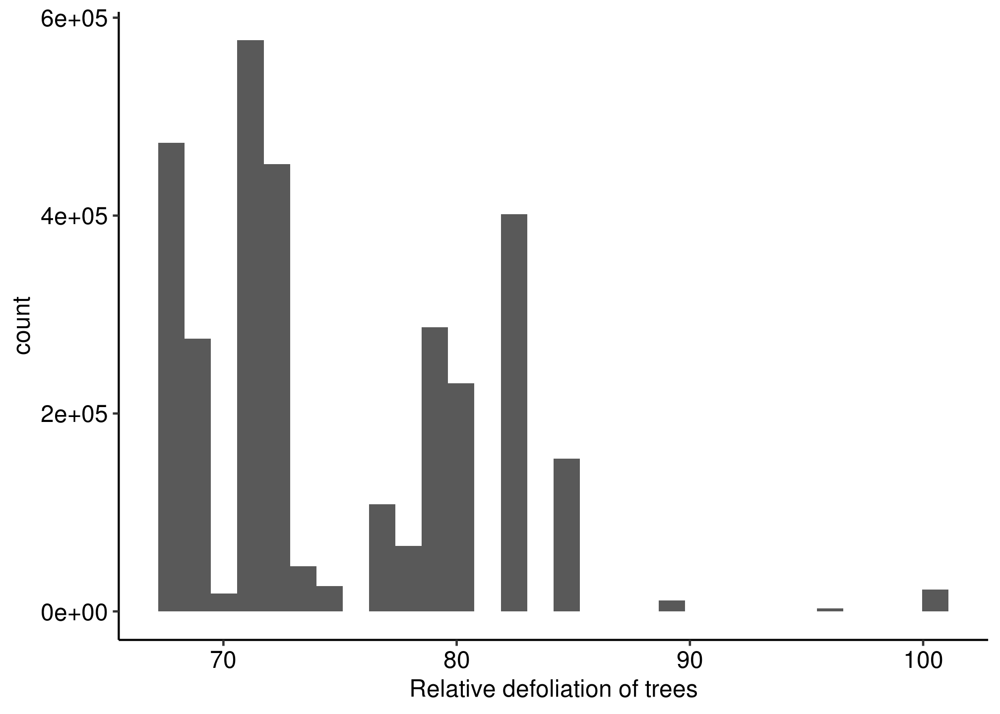
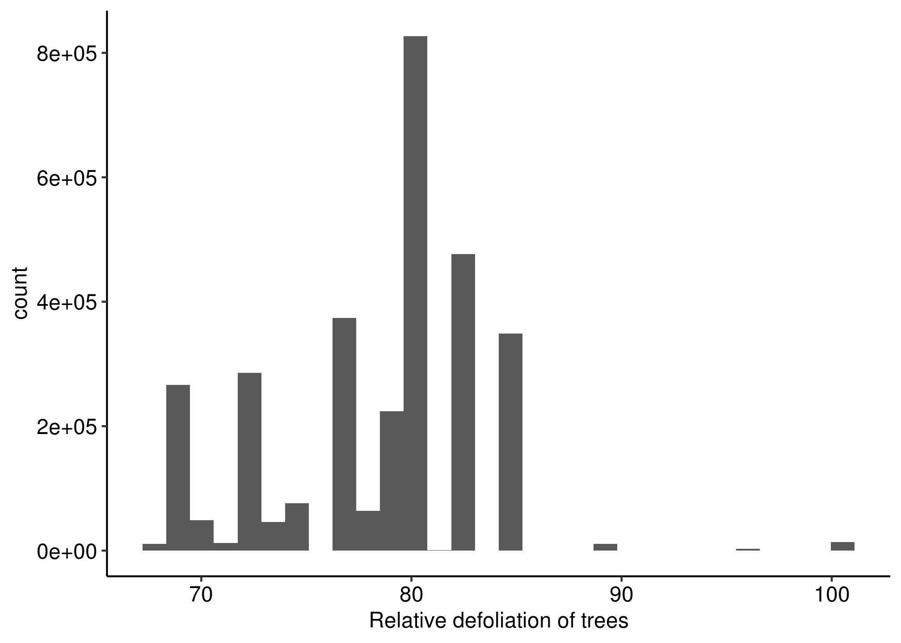

Last updated: 2019-05-22
Checks: 6 0
Knit directory: 2019-feature-selection/
This reproducible R Markdown analysis was created with workflowr (version 1.3.0). The Checks tab describes the reproducibility checks that were applied when the results were created. The Past versions tab lists the development history.
Great! Since the R Markdown file has been committed to the Git repository, you know the exact version of the code that produced these results.
Great job! The global environment was empty. Objects defined in the global environment can affect the analysis in your R Markdown file in unknown ways. For reproduciblity it’s best to always run the code in an empty environment.
The command set.seed(20190522) was run prior to running the code in the R Markdown file. Setting a seed ensures that any results that rely on randomness, e.g. subsampling or permutations, are reproducible.
Great job! Recording the operating system, R version, and package versions is critical for reproducibility.
Nice! There were no cached chunks for this analysis, so you can be confident that you successfully produced the results during this run.
Great! You are using Git for version control. Tracking code development and connecting the code version to the results is critical for reproducibility. The version displayed above was the version of the Git repository at the time these results were generated.
Note that you need to be careful to ensure that all relevant files for the analysis have been committed to Git prior to generating the results (you can use wflow_publish or wflow_git_commit). workflowr only checks the R Markdown file, but you know if there are other scripts or data files that it depends on. Below is the status of the Git repository when the results were generated:
Ignored files:
Ignored: .Rhistory
Ignored: .Rproj.user/
Ignored: .Ruserdata/
Ignored: .drake/
Ignored: analysis/rosm.cache/
Ignored: data/
Ignored: packrat/lib-R/
Ignored: packrat/lib-ext/
Ignored: packrat/lib/
Ignored: reviews/
Ignored: rosm.cache/
Ignored: tests/
Unstaged changes:
Modified: R/04-fun-sentinel-processing.R
Modified: R/05-mlr-project.R
Modified: R/fun-visualization.R
Modified: analysis/index.Rmd
Modified: analysis/timeline.Rmd
Modified: code/03-sentinel-processing.R
Modified: code/05-modeling/project/learner.R
Modified: code/05-modeling/project/param-set.R
Modified: code/05-modeling/project/resamp.R
Modified: code/05-modeling/project/task.R
Modified: code/05-modeling/project/train.R
Modified: code/05-modeling/project/tune-ctrl.R
Modified: code/05-modeling/project/tune.R
Modified: code/07-reports.R
Modified: code/99-packages.R
Modified: inst/README.md
Modified: inst/cloud-cover-2018.rds
Modified: inst/rsync-jupiter.sh
Modified: log/cache.log
Modified: log/cache2.log
Modified: log/cache3.log
Modified: log/drake.log
Modified: log/worker1.log
Modified: man/calc_nri_indices.Rd
Modified: man/calc_veg_indices.Rd
Modified: man/create_prediction_map.Rd
Modified: man/data_preprocessing.Rd
Modified: man/download.Rd
Modified: man/extract_bands_to_plot.Rd
Modified: man/extract_coords.Rd
Modified: man/extract_indices_to_plot.Rd
Modified: man/get_records.Rd
Modified: man/log_response.Rd
Modified: man/mutate_defol.Rd
Modified: man/process_hyperspec.Rd
Modified: man/split_into_feature_sets.Rd
Modified: man/standardize.Rd
Modified: packrat/init.R
Deleted: packrat/snapshot.lock
Modified: packrat/src/BH/BH_1.69.0-1.tar.gz
Modified: packrat/src/CVST/CVST_0.2-2.tar.gz
Modified: packrat/src/DBI/DBI_1.0.0.tar.gz
Modified: packrat/src/DataExplorer/DataExplorer_0.7.0.tar.gz
Modified: packrat/src/DiceKriging/DiceKriging_1.5.6.tar.gz
Modified: packrat/src/KernSmooth/KernSmooth_2.23-15.tar.gz
Modified: packrat/src/Matrix/Matrix_1.2-15.tar.gz
Modified: packrat/src/ModelMetrics/ModelMetrics_1.2.2.tar.gz
Modified: packrat/src/ParamHelpers/ParamHelpers_1.12.tar.gz
Modified: packrat/src/R.matlab/R.matlab_3.6.2.tar.gz
Modified: packrat/src/R.oo/R.oo_1.22.0.tar.gz
Modified: packrat/src/R.utils/R.utils_2.8.0.tar.gz
Modified: packrat/src/R6/R6_2.4.0.tar.gz
Modified: packrat/src/RCurl/RCurl_1.95-4.11.tar.gz
Modified: packrat/src/RJSONIO/RJSONIO_1.3-1.1.tar.gz
Modified: packrat/src/RSQLite/RSQLite_2.1.1.tar.gz
Modified: packrat/src/RcppArmadillo/RcppArmadillo_0.9.200.7.0.tar.gz
Modified: packrat/src/RcppEigen/RcppEigen_0.3.3.5.0.tar.gz
Modified: packrat/src/RcppProgress/RcppProgress_0.4.1.tar.gz
Modified: packrat/src/RcppRoll/RcppRoll_0.3.0.tar.gz
Modified: packrat/src/Rttf2pt1/Rttf2pt1_1.3.7.tar.gz
Modified: packrat/src/XML/XML_3.98-1.17.tar.gz
Modified: packrat/src/abind/abind_1.4-5.tar.gz
Modified: packrat/src/askpass/askpass_1.1.tar.gz
Modified: packrat/src/backports/backports_1.1.3.tar.gz
Modified: packrat/src/bindrcpp/bindrcpp_0.2.2.tar.gz
Modified: packrat/src/bit/bit_1.1-14.tar.gz
Modified: packrat/src/bookdown/bookdown_0.9.tar.gz
Modified: packrat/src/broom/broom_0.5.1.tar.gz
Modified: packrat/src/bsplus/bsplus_0.1.1.tar.gz
Modified: packrat/src/caTools/caTools_1.17.1.1.tar.gz
Modified: packrat/src/callr/callr_3.1.1.tar.gz
Modified: packrat/src/caret/caret_6.0-81.tar.gz
Modified: packrat/src/checkmate/checkmate_1.9.1.tar.gz
Modified: packrat/src/class/class_7.3-15.tar.gz
Modified: packrat/src/classInt/classInt_0.3-1.tar.gz
Modified: packrat/src/cli/cli_1.0.1.tar.gz
Modified: packrat/src/cli/cli_1.1.0.tar.gz
Modified: packrat/src/clipr/clipr_0.5.0.tar.gz
Modified: packrat/src/clustermq/clustermq_0.8.6.tar.gz
Modified: packrat/src/codetools/codetools_0.2-16.tar.gz
Modified: packrat/src/colorspace/colorspace_1.4-0.tar.gz
Modified: packrat/src/commonmark/commonmark_1.7.tar.gz
Modified: packrat/src/cranlike/cranlike_1.0.2.tar.gz
Modified: packrat/src/csvy/csvy_0.3.0.tar.gz
Modified: packrat/src/curl/curl_3.3.tar.gz
Modified: packrat/src/data.table/data.table_1.12.0.tar.gz
Modified: packrat/src/dbplyr/dbplyr_1.3.0.tar.gz
Modified: packrat/src/ddalpha/ddalpha_1.3.8.tar.gz
Modified: packrat/src/desc/desc_1.2.0.tar.gz
Modified: packrat/src/devtools/devtools_2.0.1.tar.gz
Modified: packrat/src/digest/digest_0.6.18.tar.gz
Modified: packrat/src/dimRed/dimRed_0.2.2.tar.gz
Modified: packrat/src/doFuture/doFuture_0.7.0.tar.gz
Modified: packrat/src/doParallel/doParallel_1.0.14.tar.gz
Modified: packrat/src/dplyr/dplyr_0.8.0.1.tar.gz
Modified: packrat/src/drake/drake_7.0.0.tar.gz
Modified: packrat/src/drake/drake_7.1.0.tar.gz
Modified: packrat/src/e1071/e1071_1.7-0.1.tar.gz
Modified: packrat/src/ellipsis/ellipsis_0.1.0.tar.gz
Modified: packrat/src/evaluate/evaluate_0.13.tar.gz
Modified: packrat/src/fastmatch/fastmatch_1.1-0.tar.gz
Modified: packrat/src/feather/feather_0.3.2.tar.gz
Modified: packrat/src/forcats/forcats_0.4.0.tar.gz
Modified: packrat/src/fs/fs_1.2.6.tar.gz
Modified: packrat/src/fst/fst_0.8.10.tar.gz
Modified: packrat/src/future.apply/future.apply_1.1.0.tar.gz
Modified: packrat/src/future.callr/future.callr_0.4.0.tar.gz
Modified: packrat/src/future/future_1.11.1.1.tar.gz
Modified: packrat/src/generics/generics_0.0.2.tar.gz
Modified: packrat/src/geometry/geometry_0.4.0.tar.gz
Modified: packrat/src/getPass/getPass_0.2-2.tar.gz
Modified: packrat/src/getSpatialData/e9afa30b9a08e109f1d1f1a4313626c2a7d1594c.tar.gz
Modified: packrat/src/ggspatial/ggspatial_1.0.3.tar.gz
Modified: packrat/src/git2r/git2r_0.24.0.tar.gz
Modified: packrat/src/glue/glue_1.3.0.tar.gz
Modified: packrat/src/haven/haven_2.1.0.tar.gz
Modified: packrat/src/highr/highr_0.7.tar.gz
Modified: packrat/src/hsdar/9de91c8f67c4b19b39bca7d2c03d37d7641b2b33.tar.gz
Modified: packrat/src/htmlwidgets/htmlwidgets_1.3.tar.gz
Modified: packrat/src/httpuv/httpuv_1.4.5.1.tar.gz
Modified: packrat/src/httr/httr_1.4.0.tar.gz
Modified: packrat/src/hunspell/hunspell_3.0.tar.gz
Modified: packrat/src/igraph/igraph_1.2.4.tar.gz
Modified: packrat/src/infuser/infuser_0.2.8.tar.gz
Modified: packrat/src/ini/ini_0.3.1.tar.gz
Modified: packrat/src/ipred/ipred_0.9-8.tar.gz
Modified: packrat/src/iterators/iterators_1.0.10.tar.gz
Modified: packrat/src/janitor/janitor_1.1.1.tar.gz
Modified: packrat/src/jpeg/jpeg_0.1-8.tar.gz
Modified: packrat/src/jsonlite/jsonlite_1.6.tar.gz
Modified: packrat/src/kernlab/kernlab_0.9-27.tar.gz
Modified: packrat/src/knitr/knitr_1.21.tar.gz
Modified: packrat/src/later/later_0.8.0.tar.gz
Modified: packrat/src/lava/lava_1.6.5.tar.gz
Modified: packrat/src/leaflet.extras/leaflet.extras_1.0.0.tar.gz
Modified: packrat/src/leaflet/leaflet_2.0.2.tar.gz
Modified: packrat/src/lhs/lhs_1.0.1.tar.gz
Modified: packrat/src/libcoin/libcoin_1.0-3.tar.gz
Modified: packrat/src/lpSolve/lpSolve_5.6.13.tar.gz
Modified: packrat/src/lubridate/lubridate_1.7.4.tar.gz
Modified: packrat/src/magic/magic_1.5-9.tar.gz
Modified: packrat/src/magick/magick_2.0.tar.gz
Modified: packrat/src/mapedit/mapedit_0.4.3.tar.gz
Modified: packrat/src/markdown/markdown_0.9.tar.gz
Modified: packrat/src/mco/mco_1.0-15.1.tar.gz
Modified: packrat/src/mgcv/mgcv_1.8-27.tar.gz
Modified: packrat/src/mime/mime_0.6.tar.gz
Modified: packrat/src/misc3d/misc3d_0.8-4.tar.gz
Modified: packrat/src/mlr/261593e65bdd04f897e9cf5a1789040003e4067f.tar.gz
Modified: packrat/src/mlrCPO/mlrCPO_0.3.4-2.tar.gz
Modified: packrat/src/mlrMBO/mlrMBO_1.1.2.tar.gz
Modified: packrat/src/modelr/modelr_0.1.4.tar.gz
Modified: packrat/src/namer/461c6651e51ade0d96b1663c6603261e672b64d6.tar.gz
Modified: packrat/src/narray/narray_0.4.1.tar.gz
Modified: packrat/src/networkD3/networkD3_0.4.tar.gz
Modified: packrat/src/nnet/nnet_7.3-12.tar.gz
Modified: packrat/src/openssl/openssl_1.2.1.tar.gz
Modified: packrat/src/openxlsx/openxlsx_4.1.0.tar.gz
Modified: packrat/src/packrat/packrat_0.4.9-1.tar.gz
Modified: packrat/src/packrat/packrat_0.5.0.tar.gz
Modified: packrat/src/pacman/pacman_0.5.0.tar.gz
Modified: packrat/src/partykit/partykit_1.2-3.tar.gz
Modified: packrat/src/pbmcapply/pbmcapply_1.3.1.tar.gz
Modified: packrat/src/pillar/pillar_1.3.1.tar.gz
Modified: packrat/src/pkgbuild/pkgbuild_1.0.2.tar.gz
Modified: packrat/src/pkgconfig/pkgconfig_2.0.2.tar.gz
Modified: packrat/src/pkgload/pkgload_1.0.2.tar.gz
Modified: packrat/src/plot3D/plot3D_1.1.1.tar.gz
Modified: packrat/src/plotly/plotly_4.8.0.tar.gz
Modified: packrat/src/polynom/polynom_1.3-9.tar.gz
Modified: packrat/src/prediction/prediction_0.3.6.2.tar.gz
Modified: packrat/src/prettycode/prettycode_1.0.2.tar.gz
Modified: packrat/src/prettymapr/prettymapr_0.2.2.tar.gz
Modified: packrat/src/processx/processx_3.2.1.tar.gz
Modified: packrat/src/prodlim/prodlim_2018.04.18.tar.gz
Modified: packrat/src/progress/progress_1.2.0.tar.gz
Modified: packrat/src/promises/promises_1.0.1.tar.gz
Modified: packrat/src/ps/ps_1.3.0.tar.gz
Modified: packrat/src/psych/psych_1.8.12.tar.gz
Modified: packrat/src/purrr/purrr_0.3.0.tar.gz
Modified: packrat/src/ranger/ranger_0.11.1.tar.gz
Modified: packrat/src/raster/raster_2.8-19.tar.gz
Modified: packrat/src/rcmdcheck/rcmdcheck_1.3.2.tar.gz
Modified: packrat/src/readr/readr_1.3.1.tar.gz
Modified: packrat/src/readxl/readxl_1.3.0.tar.gz
Modified: packrat/src/recipes/recipes_0.1.4.tar.gz
Modified: packrat/src/rgdal/rgdal_1.4-2.tar.gz
Modified: packrat/src/rgdal/rgdal_1.4-3.tar.gz
Modified: packrat/src/rgenoud/rgenoud_5.8-3.0.tar.gz
Modified: packrat/src/rio/rio_0.5.16.tar.gz
Modified: packrat/src/rjson/rjson_0.2.20.tar.gz
Modified: packrat/src/rlang/rlang_0.3.4.tar.gz
Modified: packrat/src/rmarkdown/rmarkdown_1.11.tar.gz
Modified: packrat/src/robustbase/robustbase_0.93-3.tar.gz
Modified: packrat/src/rosm/rosm_0.2.4.tar.gz
Modified: packrat/src/roxygen2/roxygen2_6.1.1.tar.gz
Modified: packrat/src/rpart/rpart_4.1-13.tar.gz
Modified: packrat/src/rrtools.addin/f480299c95e0453934bc2a19afdbc39e81520d17.tar.gz
Modified: packrat/src/rrtools/c880413368ea6635c6b624df09272a741b74cfa8.tar.gz
Modified: packrat/src/rsconnect/rsconnect_0.8.13.tar.gz
Modified: packrat/src/rstudioapi/rstudioapi_0.9.0.tar.gz
Modified: packrat/src/rvcheck/rvcheck_0.1.3.tar.gz
Modified: packrat/src/rzmq/rzmq_0.9.4.tar.gz
Modified: packrat/src/selectr/selectr_0.4-1.tar.gz
Modified: packrat/src/sessioninfo/sessioninfo_1.1.1.tar.gz
Modified: packrat/src/sf/sf_0.7-3.tar.gz
Modified: packrat/src/sfsmisc/sfsmisc_1.1-3.tar.gz
Modified: packrat/src/shiny/shiny_1.2.0.tar.gz
Modified: packrat/src/shinyFiles/shinyFiles_0.7.2.tar.gz
Modified: packrat/src/smoof/smoof_1.5.1.tar.gz
Modified: packrat/src/snakecase/snakecase_0.9.2.tar.gz
Modified: packrat/src/snow/snow_0.4-3.tar.gz
Modified: packrat/src/sourcetools/sourcetools_0.1.7.tar.gz
Modified: packrat/src/sp/sp_1.3-1.tar.gz
Modified: packrat/src/spData/spData_0.3.0.tar.gz
Modified: packrat/src/startup/startup_0.11.0.tar.gz
Modified: packrat/src/stringi/stringi_1.3.1.tar.gz
Modified: packrat/src/stringr/stringr_1.4.0.tar.gz
Modified: packrat/src/styler/styler_1.1.0.tar.gz
Modified: packrat/src/survival/survival_2.43-3.tar.gz
Modified: packrat/src/sys/sys_3.0.tar.gz
Modified: packrat/src/testthat/testthat_2.0.1.tar.gz
Modified: packrat/src/tibble/tibble_2.0.1.tar.gz
Modified: packrat/src/tidyr/tidyr_0.8.2.tar.gz
Modified: packrat/src/tidyselect/tidyselect_0.2.5.tar.gz
Modified: packrat/src/timevis/timevis_0.5.tar.gz
Modified: packrat/src/tinytex/tinytex_0.10.tar.gz
Modified: packrat/src/usethis/usethis_1.4.0.tar.gz
Modified: packrat/src/utf8/utf8_1.1.4.tar.gz
Modified: packrat/src/versions/de231cb523aa9134a1bd4e947c8204a7a08f3daa.tar.gz
Modified: packrat/src/viridis/viridis_0.5.1.tar.gz
Modified: packrat/src/vistime/vistime_0.8.1.tar.gz
Modified: packrat/src/webshot/webshot_0.5.1.tar.gz
Modified: packrat/src/xfun/xfun_0.5.tar.gz
Modified: packrat/src/xgboost/xgboost_0.81.0.1.tar.gz
Modified: packrat/src/xgboost/xgboost_0.82.1.tar.gz
Modified: packrat/src/xopen/xopen_1.0.0.tar.gz
Modified: packrat/src/xtable/xtable_1.8-3.tar.gz
Modified: packrat/src/yaml/yaml_2.2.0.tar.gz
Modified: packrat/src/zip/zip_2.0.0.tar.gz
Modified: packrat/src/zoo/zoo_1.8-4.tar.gz
Note that any generated files, e.g. HTML, png, CSS, etc., are not included in this status report because it is ok for generated content to have uncommitted changes.
These are the previous versions of the R Markdown and HTML files. If you’ve configured a remote Git repository (see ?wflow_git_remote), click on the hyperlinks in the table below to view them.
| File | Version | Author | Date | Message |
|---|---|---|---|---|
| Rmd | b02b9da | pat-s | 2019-05-22 | restructure for workflowr |
Predicted defoliation by XGBOOST on 20 m spatial resolution in the Basque Country.
With an RMSE of 36 % (for a range of 0 - 100), the model focuses its prediction to the mean of the response range (0 - 100) to achieve acceptable performance results on the test set.
The following vegetation indices have been used, selected by the internal variable importance rating of XGBOOST:
The following shows the optimization path (RMSE) of the hyperparameter tuning for the XGBOOST model using 20 MBO iterations (with a starting design of 30).
[1] 43.17171 44.46635 43.42093 43.82827 44.53159 43.86555 41.70989
[8] 37.23756 37.77271 37.66704 39.38304 40.50224 36.66701 36.22678
[15] 38.25126 36.93972 39.12485 42.45889 38.05913 39.47527Some more details on the optimization path are presented below:

Since these absolute values do not reflect the truth, we decided to create a relative Index from the predicted absolute values.
This was done by calling
scale(data$defoliation, center = FALSE,
scale = max(data$defoliation, na.rm = TRUE)/100)which re-scales the data from 0 - 100. The code was adapted from this Stackoverflow answer.


2017

2018



2017

2018

Warning in system("rsync -rlptDvzog --chown=www-data:www-data --fake-super
\n /home/patrick/papers/2019-feature-selection/docs/figure/defoliation-
maps.Rmd/* \n -e ssh patrick@jupiter.geogr.uni-jena.de:/home/www/life-
healthy-forest/action-B1-spatial-mapping/figure/report-defoliation.Rmd/"):
error in running command
R version 3.5.2 (2018-12-20)
Platform: x86_64-pc-linux-gnu (64-bit)
Running under: CentOS Linux 7 (Core)
Matrix products: default
BLAS/LAPACK: /opt/spack/opt/spack/linux-centos7-x86_64/gcc-7.3.0/openblas-0.3.5-zncvk4jccaqyfl4z3vszaboeps6hyzta/lib/libopenblas_zen-r0.3.5.so
locale:
[1] LC_CTYPE=en_GB.UTF-8 LC_NUMERIC=C
[3] LC_TIME=en_GB.UTF-8 LC_COLLATE=en_GB.UTF-8
[5] LC_MONETARY=en_GB.UTF-8 LC_MESSAGES=en_GB.UTF-8
[7] LC_PAPER=en_GB.UTF-8 LC_NAME=C
[9] LC_ADDRESS=C LC_TELEPHONE=C
[11] LC_MEASUREMENT=en_GB.UTF-8 LC_IDENTIFICATION=C
attached base packages:
[1] grid stats graphics grDevices utils datasets methods
[8] base
other attached packages:
[1] gridExtra_2.3 tidyselect_0.2.5 workflowr_1.3.0
[4] here_0.1 ggpubr_0.1.6 ggspatial_1.0.3
[7] gdalUtils_2.0.1.7 getSpatialData_0.0.4 knitr_1.21
[10] rgenoud_5.8-3.0 parallelMap_1.3 mlrMBO_1.1.2
[13] smoof_1.5.1 checkmate_1.9.1 BBmisc_1.11
[16] mapview_2.3.0 stringr_1.4.0 fs_1.2.6
[19] curl_3.3 mlrCPO_0.3.4-2 mlr_2.13.9000
[22] ParamHelpers_1.12 data.table_1.12.0 magrittr_1.5
[25] future.apply_1.1.0 future.callr_0.4.0 furrr_0.1.0.9002
[28] future_1.11.1.1 R.utils_2.8.0 R.oo_1.22.0
[31] R.methodsS3_1.7.1 glue_1.3.0 purrr_0.3.0
[34] sf_0.7-3 dplyr_0.8.0.1 hsdar_0.5.2
[37] caret_6.0-81 ggplot2_3.1.0 lattice_0.20-38
[40] signal_0.7-6 rootSolve_1.7 rgdal_1.4-3
[43] raster_2.8-19 sp_1.3-1 drake_7.3.0
loaded via a namespace (and not attached):
[1] backports_1.1.3 fastmatch_1.1-0 mapedit_0.4.3
[4] plyr_1.8.4 igraph_1.2.4 lazyeval_0.2.1
[7] splines_3.5.2 storr_1.2.1 crosstalk_1.0.0
[10] listenv_0.7.0 leaflet_2.0.2 usethis_1.4.0
[13] digest_0.6.18 foreach_1.4.4 htmltools_0.3.6
[16] memoise_1.1.0 base64url_1.4 remotes_2.0.2
[19] recipes_0.1.4 globals_0.12.4 gower_0.1.2
[22] prettyunits_1.0.2 colorspace_1.4-0 xfun_0.5
[25] DiceKriging_1.5.6 callr_3.1.1 crayon_1.3.4
[28] jsonlite_1.6 survival_2.43-3 iterators_1.0.10
[31] gtable_0.2.0 ipred_0.9-8 webshot_0.5.1
[34] pkgbuild_1.0.2 abind_1.4-5 scales_1.0.0
[37] GGally_1.4.0 DBI_1.0.0 Rcpp_1.0.0
[40] viridisLite_0.3.0 xtable_1.8-3 units_0.6-2
[43] stats4_3.5.2 lava_1.6.5 prodlim_2018.04.18
[46] htmlwidgets_1.3 httr_1.4.0 RColorBrewer_1.1-2
[49] reshape_0.8.8 pkgconfig_2.0.2 nnet_7.3-12
[52] RJSONIO_1.3-1.1 labeling_0.3 rlang_0.3.4
[55] reshape2_1.4.3 later_0.8.0 munsell_0.5.0
[58] tools_3.5.2 cli_1.1.0 generics_0.0.2
[61] devtools_2.0.1 evaluate_0.13 yaml_2.2.0
[64] ModelMetrics_1.2.2 processx_3.2.1 satellite_1.0.1
[67] nlme_3.1-137 whisker_0.3-2 mime_0.6
[70] xml2_1.2.0 compiler_3.5.2 rstudioapi_0.10
[73] prettymapr_0.2.2 plotly_4.8.0 png_0.1-7
[76] e1071_1.7-0.1 testthat_2.0.1 RPostgreSQL_0.6-2
[79] tibble_2.0.1 lhs_1.0.1 stringi_1.3.1
[82] ps_1.3.0 desc_1.2.0 plot3D_1.1.1
[85] Matrix_1.2-15 classInt_0.3-1 rosm_0.2.4
[88] pillar_1.3.1 httpuv_1.4.5.1 R6_2.4.0
[91] promises_1.0.1 sessioninfo_1.1.1 codetools_0.2-16
[94] MASS_7.3-51.1 assertthat_0.2.0 pkgload_1.0.2
[97] rprojroot_1.3-2 withr_2.1.2 parallel_3.5.2
[100] rpart_4.1-13 timeDate_3043.102 tidyr_0.8.2
[103] class_7.3-15 rmarkdown_1.11 misc3d_0.8-4
[106] mco_1.0-15.1 git2r_0.24.0 getPass_0.2-2
[109] shiny_1.2.0 lubridate_1.7.4 base64enc_0.1-3